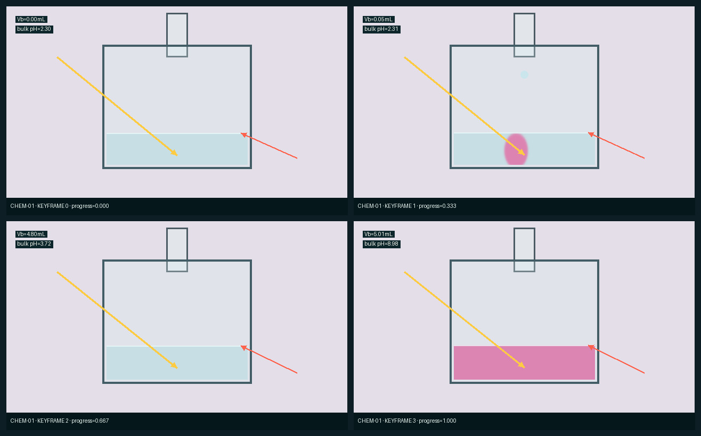

第一次接手项目，只需先理解这四件事
真实数据长什么样：用烧杯举例
左上是程序四个关键状态；右上是程序直接导出的器材对象身份；左下是器材硬边界； 右下是项目已接受的外观质量。前三者决定“东西在哪里、怎样变”，最后一张只决定“玻璃与光照看起来怎样”。



本轮发现并明确记录的历史缺口：Stage 2 烧杯的漂亮线稿来自固定坐标模板， 并没有由程序语义生成。Stage 3 不把它伪装成已解决；S3.1 正是要把这条断链替换成 typed geometry canonicalizer。
十一项输入的完整度矩阵
“视觉目标 missing”不会阻止合同冒烟， 但会阻止该案例调用图像模型。当前五个 sentinel 与历史三角洲均已有目标包；GEO-02 明确标为 provisional。
| 案例 | 学科 | 几何策略 | 时间信息 | 视觉目标 | 已知缺口 |
|---|---|---|---|---|---|
| MATH-01 单位圆怎样生成正弦曲线 | 数学 | preserve_exact | 4 个关键帧；49 个连续帧 | missing | Visual target package has not yet been curated; model generation is forbidden until it exists. |
| MATH-02 勾股定理的拼图重排证明 | 数学 | preserve_exact | 4 个关键帧；49 个连续帧 | accepted_project_baseline | — |
| PHYS-01 两个同步振源产生的水面波干涉 | 物理 | preserve_exact | 4 个关键帧；49 个连续帧 | accepted_project_baseline | — |
| PHYS-02 磁铁运动为什么在线圈中产生感应电流 | 物理 | canonicalize | 4 个关键帧；49 个连续帧 | missing | Visual target package has not yet been curated; model generation is forbidden until it exists. |
| CHEM-01 酸碱滴定从局部变色到到达终点 | 化学 | canonicalize | 4 个关键帧；49 个连续帧 | accepted_project_baseline | — |
| CHEM-02 盐溶液蒸发、过饱和与晶体生长 | 化学 | canonicalize | 4 个关键帧；49 个连续帧 | missing | Visual target package has not yet been curated; model generation is forbidden until it exists. |
| BIO-01 一个动物细胞的有丝分裂 | 生物 | layout_only | 4 个关键帧；49 个连续帧 | accepted_project_baseline | — |
| BIO-02 气孔保卫细胞吸水后怎样打开气孔 | 生物 | layout_only | 4 个关键帧；49 个连续帧 | missing | Visual target package has not yet been curated; model generation is forbidden until it exists. |
| GEO-01 曲流发展、裁弯取直与牛轭湖形成 | 地理 | layout_only | 4 个关键帧；49 个连续帧 | missing | Visual target package has not yet been curated; model generation is forbidden until it exists. |
| GEO-02 地形雨与背风坡雨影 | 地理 | layout_only | 4 个关键帧；49 个连续帧 | provisional | Visual target is provisional; a generated candidate must not be promoted without visual and mechanism review. |
| GEO-HIST-DELTA-01 历史三角洲形成质量回归 | 地理 | layout_only | 5 个关键帧；0 个连续帧 | accepted_project_baseline | — |
S3.0 自动检验
- ✓ five_json_schemas_are_frozen输入、注册表、视觉目标、运动和 Loop 状态均有版本化 Schema。
- ✓ ten_scale_cases_plus_delta_are_registered10 个跨学科案例 + 1 个历史三角洲质量回归。
- ✓ all_ten_scale_cases_have_continuous_program_frames每个规模案例都有 49 帧程序时间线，不只利用关键帧截图。
- ✓ all_contracts_export_object_identity对象身份被作为稳定几何与跨帧追踪接口。
- ✓ all_sentinel_visual_targets_are_not_missing5 个 sentinel 与历史三角洲均有本地正例、反例和量表。
- ✓ geometry_and_appearance_are_separated外观参考不能作为几何来源，泄漏检查是硬门禁。
- ✓ case_selector_is_deterministicS3.1 固定选择 CHEM-01，回归 PHYS-02 与 MATH-02。
- ✓ phase0_used_no_image_or_video_modelmodel_runs: image=0, video=0。
- ✓ report_links_resolve报告中的本地图片与机器可读产物链接全部存在。
所有文件都保存 SHA-256；同一输入重跑 Phase 0 会产生相同合同与选择结果。
视觉包明确设置 appearance_to_geometry_leakage 硬门禁，防止参考图反过来偷改几何。
Loop 自动选择的下一步
目标： CHEM-01 · canonicalize
跨学科回归： PHYS-02（同类器材规范重建）与 MATH-02（确保精确几何路线不被误改）。
首个问题：固定坐标的烧杯线稿能产生好图，但无法从任意程序语义复现。
首个可证伪假设：如果每个几何对象都有 typed identity 和程序 bbox， 通用规范几何库就能在不读取最终好图几何的前提下生成稳定控制图；若对象缺失、越界或精确路线被改动，则假设失败。
排序规则原样保存于 case-selection.json；不是围绕烧杯临时拍脑袋。它依次考虑阶段缺口、失败严重度、 跨学科覆盖、输入/视觉目标完整度、成本和稳定 case_id。
可复现入口
.venv/bin/python -m modules.video_model.stage3.phase0
主要机器可读产物：case_registry.json · state.json · accepted.json · phase0_manifest.json